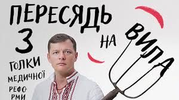

Какие интернет-шутки нам попадаются
Эти смешные, казалось бы, нарисованные ребенком рожицы покоряют интернет, начиная с 2008 года. Миллионы пользователей сегодня использую их при создании демотиваторов или в качестве комментариев к постам, чтобы выразить самые разные эмоции – от счастья и умиления, до огорчения и неловкости. Изначально эти картинки создавались для простых шуточных комиксов на различных форумах. Но благодаря своей простоте, ярко передающей чувства, вскоре они стали узнаваемыми для любого пользователя. Например, что такое "троллфейс", объяснять просто излишне - эту рожицу знает каждый.
Траволта в замешательстве
Траволта в замешательстве. Спустя 20 лет после выхода культового фильма Квентина Тарантино "Криминальное чтиво" интернет-пользователи дали новую жизнь персонажу Винсенту Веге, которого в ленте сыграл Джон Траволта. Всего несколько секунд сомнений и замешательства в исполнении Траволты сегодня весьма органично вписываются как в кадры других популярных фильмов, так и в актуальные новостные видео или просто знаковые жизненные ситуации.
Одним із перших європейських смичкових інструментів вважається крота – давній струно-смичковий інструмент кельтського походження, який був розповсюджений в XI-XVI століттях в Ірландії та Уельсі. Про точну конструкцію давніх європейських смичків ми можемо судити тільки по малюнкам, які не завжди вірно передають її.